Getting Started with Navigation and UI¶
Oro applications offer high flexibility and customization, which means that the user interface of the stores may differ. However, the integral parts that constitute the interface are cross-functional.
General Layout¶
Note
The screenshots in this guide are provided for illustration purposes only, as layouts and available functionality may vary as the result of customization.
The key elements of the front store menu are represented below.
Common Controls¶
Tables¶
Views in the form of tables can be considered the most commonly used UI elements in Oro applications. They are interactive, as they not only display data about specific store records, but contain links to these records’ pages. Views are also configurable – so you can adjust the appearance and contents of the tables to your taste and needs.
Such tables represent aggregated views of data and store records, making it easy to locate and manage records, with every grid page functionally tailored to the type of information it represents.
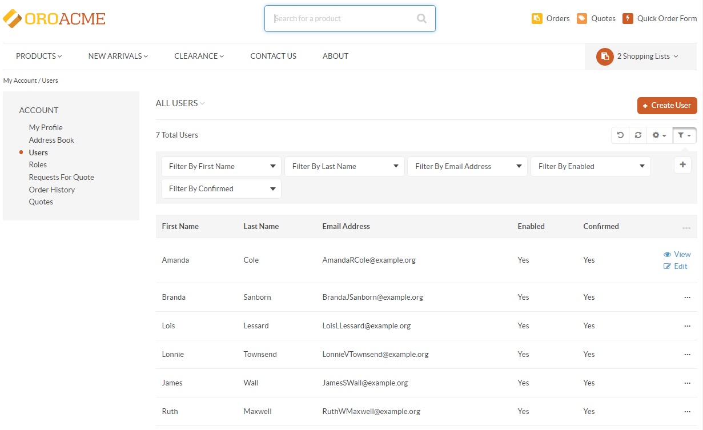Location Trail¶
In the top left corner of the view page, you can see where the current page is located in the menu. The name of the selected view table is usually located in the row below.
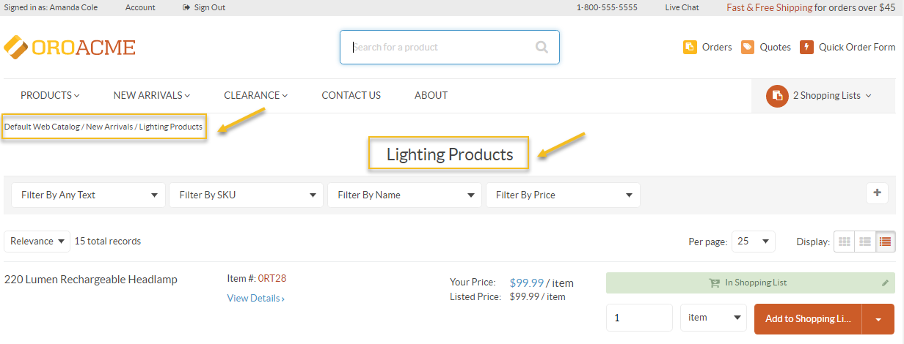Display Options¶
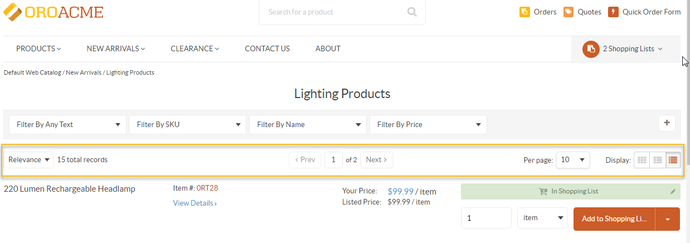Sorting
Sorting options are located on the left of the view page under the view table name below the filter. They allow sorting records alphabetically, by price or relevance.
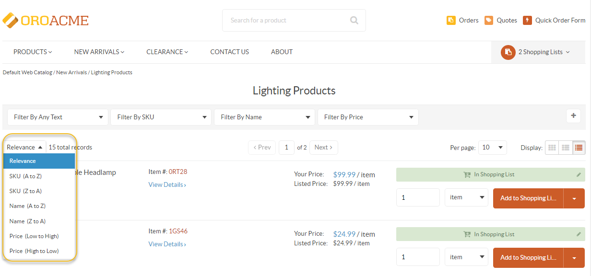Layout
Layout options are located on the far right under the view table name.
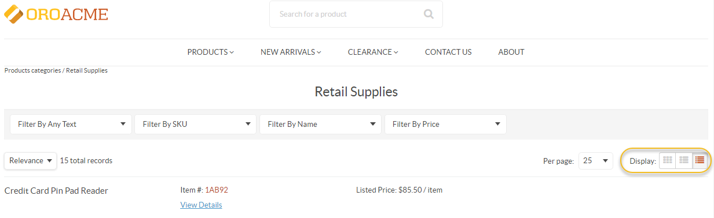The following layout options are available:
- Tiles:
- Details:
- Compact Details:
Page Navigation
If you have a lot of records, they all may not fit in one data page. In this case, use the pager block in the center above the view table.
In the pager block, you can see the page that you are currently on, the total number of data pages and the total number of records in the view table.
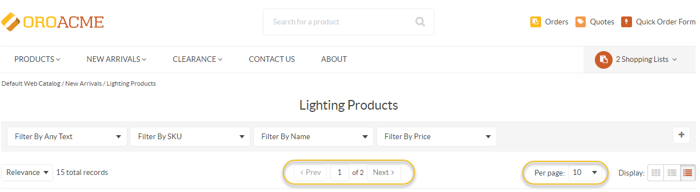You can navigate between pages using the < Prev and > Next page buttons. To open a particular page, type its number in the field that displays the current page and press Enter.
Saved Views¶
A saved view is a table with applied filters or custom ordering.
The default table view is what you see when you open a view page, it shows unfiltered data.
Tables can be viewed, saved as new ones, shared, renamed, set as default and deleted:
- To view the list of available tables: click on the arrow next to the table name.
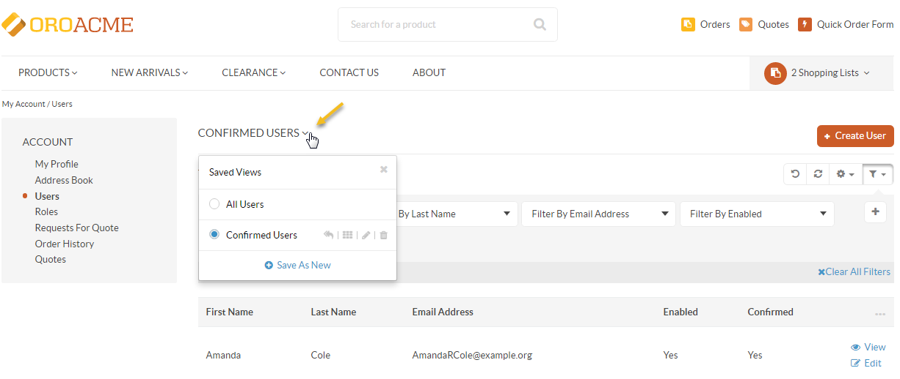
To save a table as a new one: click Save as New.
- Enter New List Name: Define a name of the new view table.
- Set as Default: Select this check box to set the new table as the default one.
- Add: Click Add to add a new saved view table.
- Cancel: Click Cancel to exit.
To share the selected saved view: click
To unshare the selected saved view: click
To set the selected saved view as default: click
To rename the selected saved view: click
To delete the selected saved view: click
Action Buttons¶
Action buttons are on the right of the view page. They enable you to perform a number of actions with records. The set of such buttons varies depending on the type of the view opened.
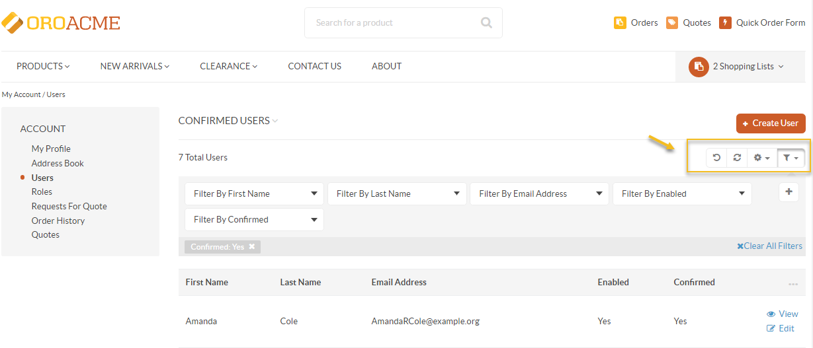The following action buttons can be available:
Refresh the view table: click to update the view table.
Reset the view table: click to clear view table customization and return to default settings. Reset applies to all filters, records per page and sorting changes that you have made.
Table settings: click to define which columns to show in the table:
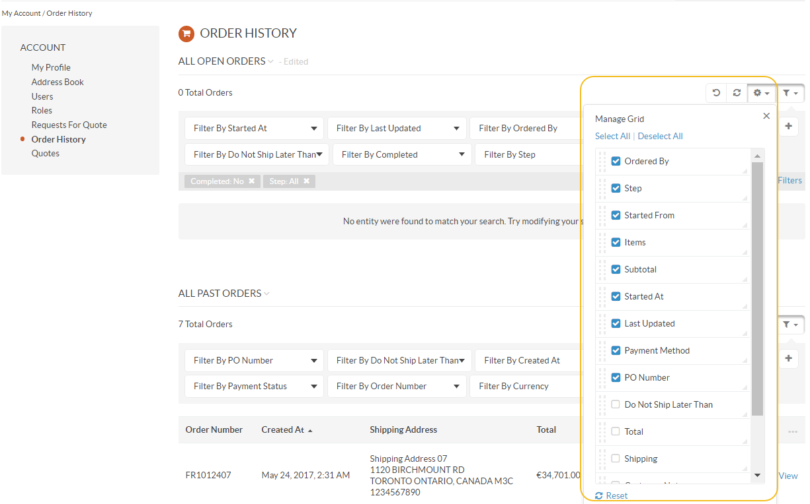- You can manually select the columns by clicking on the check box next to the required field.
- To show/hide all columns in the table, click Select All/Deselect All.
- To clear customization, click Reset.
- To change the order of the columns, click on the ellipsis icon next to the name of the column you wish to move, hold the mouse button, and drag the column to the required position.
Filters: click to show/hide filters to select specific items to be shown in the table. More information on filters is provided in the Filters section below.
Filters¶
Filters are used when you need to quickly pick out the records you need from the entire data pool.
The following actions are available for filters:
To show/hide filters, click
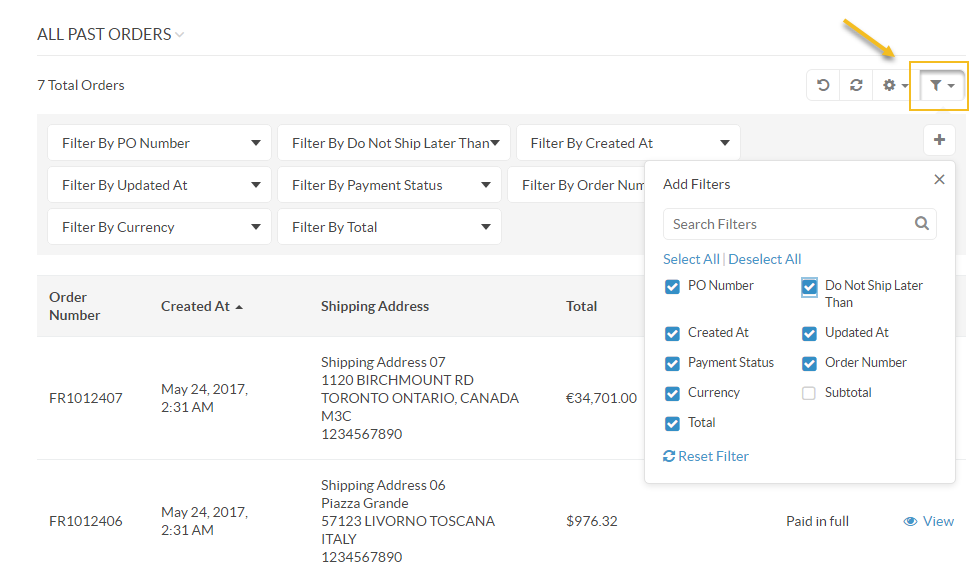Note
Note that not all filters may be visible by default.
To add, remove, search or reset filters, click and perform the required action.
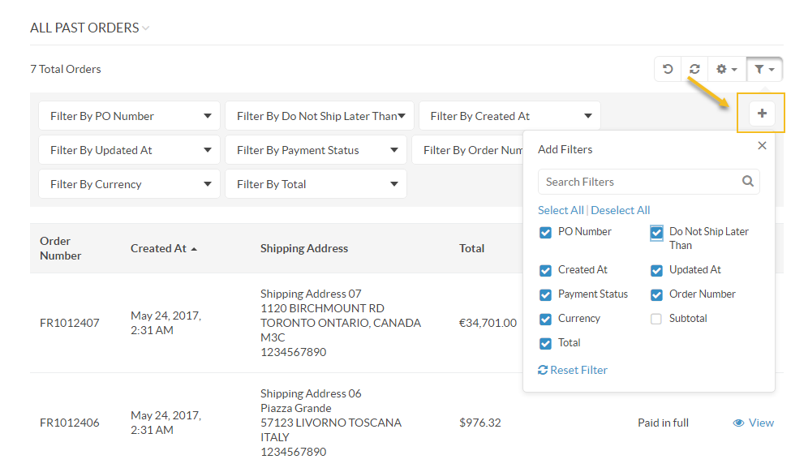To apply a filter, click on its button in the bar, and specify your query in the control that appears. Note that filter controls might look different depending on the type of data you are going to filter — whether it is textual, numeric, date or option set.
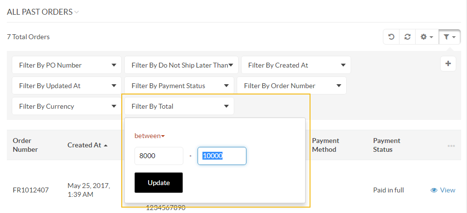After the filter is applied, its query will appear in the control, so you can easily recall how you have filtered the data.
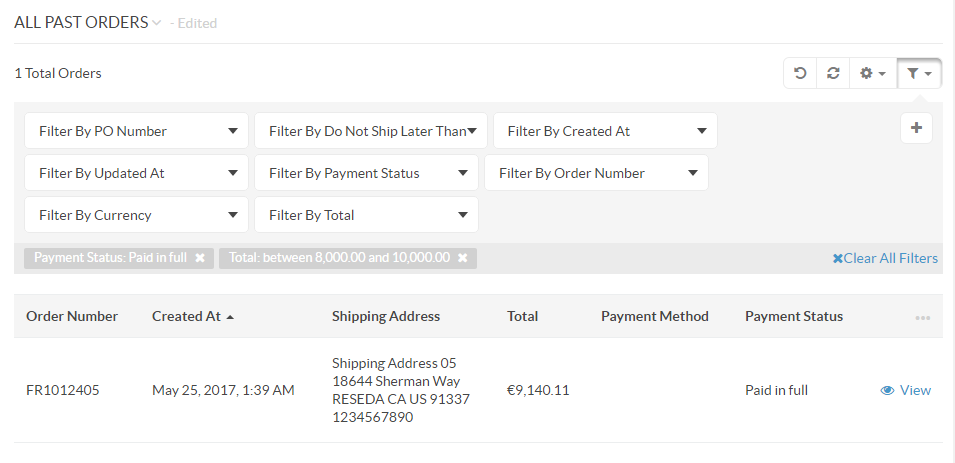To remove a filter, click on a cross x after the query.
If you wish to reset all applied filters, click x Clear All Filters.
The following example is an illustration of filters in action:

{kind=link}
Table Options¶
View tables usually contain one or more options applied to specific records within them. These options take the form of individual icons or icons within the ellipsis menu that can be collapsed.
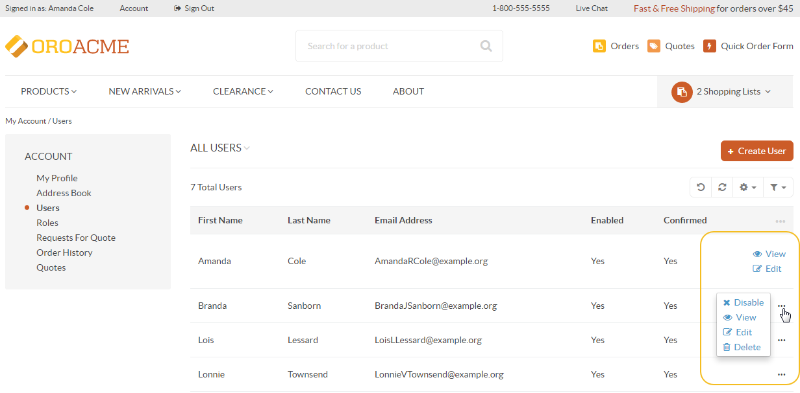 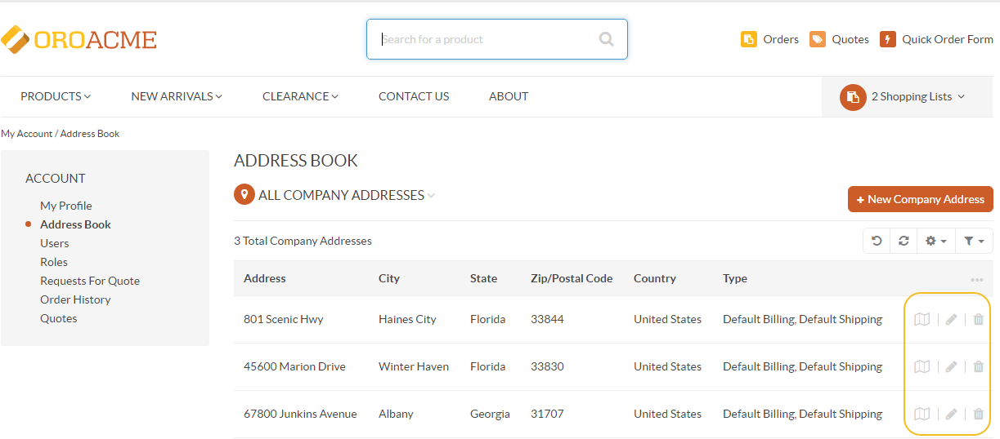
Note
The types of options available are subject to the type of data contained in the table and to the system configuration.
Mass Delete in Tables¶
With mass actions, you can apply one action to multiple items at the same time, which can simplify and speed up the process of selecting the required items.
In the front store, mass delete action is available in the Address book and Users sections only for the registered users.
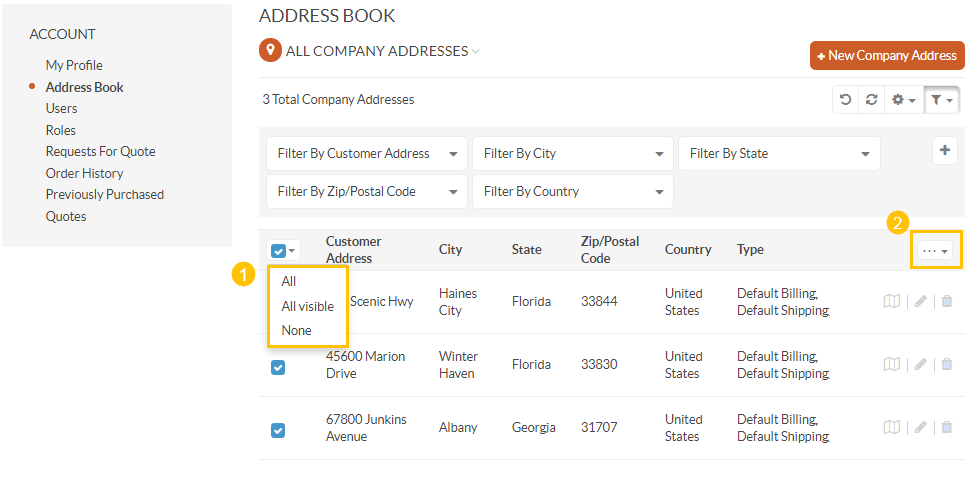To use mass delete action in the front store, you need to sign into the account and proceed with the next steps:
- Navigate to the account page by clicking Account at the top.
Click the Address book section.
The following page with the list of customer addresses displays:
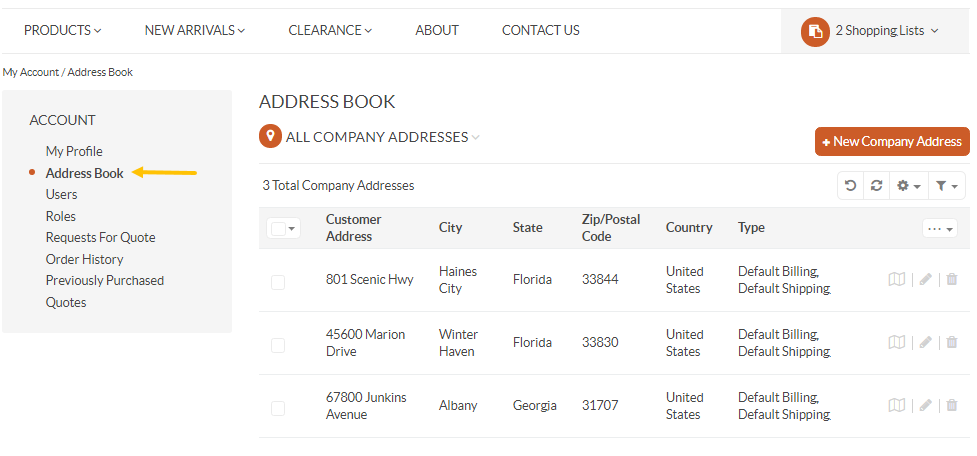To select multiple customer addresses, click in the left corner of the list header.
- The All option enables to select all the addresses available under this section.
- The All visible option enables to select only the addresses visible on the page you are currently viewing.
- The None option enables to deselect all the addresses which were selected previously.
Hover over the More Options menu at the end of the list header and click Delete to delete multiple addresses at a time.
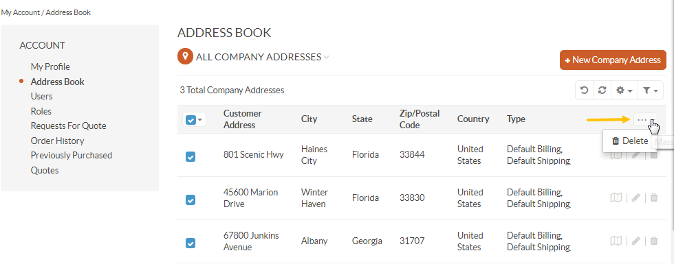